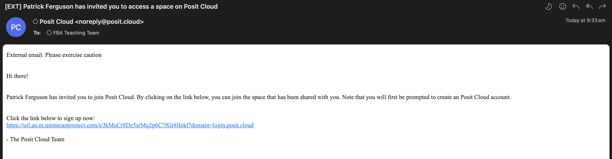
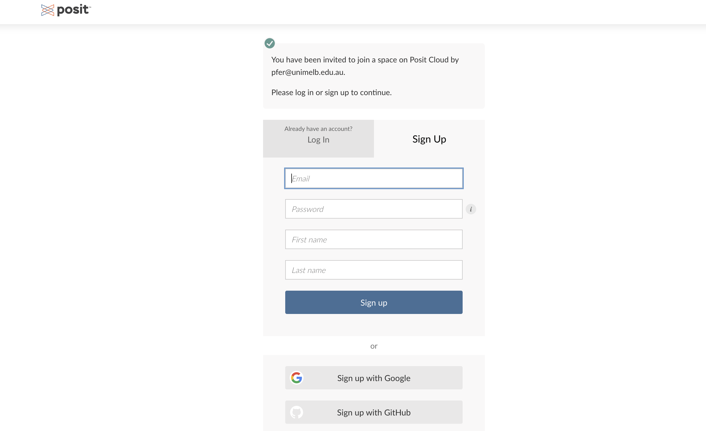
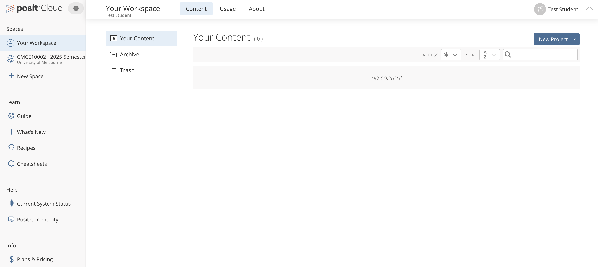
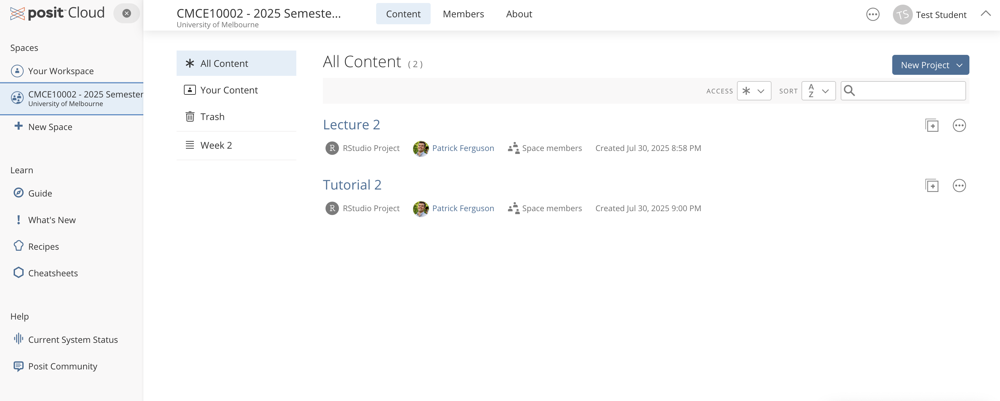
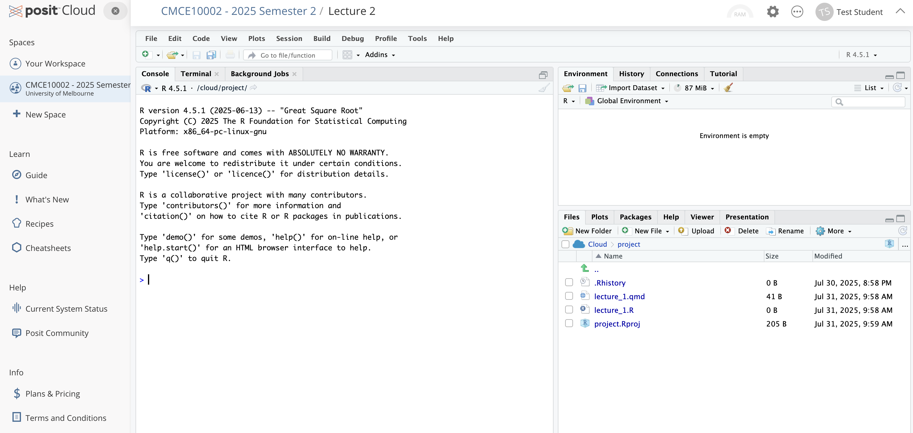
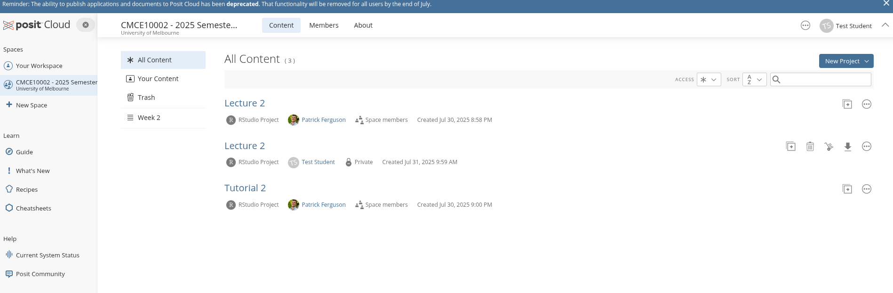

2 + 23 Reproducible Workflows with R & Posit Cloud
If science is about systematically building and organizing knowledge in the form of testable explanations and predictions, then business science applies this mindset to the world of data-driven business decision-making. A business scientist doesn’t just crunch numbers—they seek to generate insights that are reliable, testable, and useful to others.
This means we don’t just ask questions and analyze data. We build knowledge that others can follow, test, and build upon. It’s not enough to reach the right conclusion once, in a way that only you understand. True business science requires reproducible workflows—ways of working with data that are clear, transparent, and repeatable.
This chapter introduces the tools we’ll use to begin doing just that: R, a language designed for data analysis, and Posit Cloud, a cloud-based environment for running R code. Together, they’ll help us learn how to think and work like business scientists from day one.
Why Not Excel?
Spreadsheets like Excel or Google Sheets are familiar—and for many tasks, they work just fine. But they don’t scale well when you’re doing real analysis.
Here’s why we don’t use spreadsheets for this course:
No clear record of what you did
In Excel, it’s easy to lose track of which formulas you changed or which filters you applied. With code, every step is written down.Easy to make silent errors
One wrong cell reference can quietly mess up your whole analysis. In R, mistakes are more visible—and easier to fix.Hard to repeat or update
If you need to run the same analysis again with new data, you’ll likely have to repeat every step by hand. With code, one click reruns the whole process.Not designed for teamwork
It’s difficult to collaborate on a spreadsheet without overwriting someone else’s work. With code-based tools, versioning and sharing are built in.
We’re not anti-Excel. But to become a business scientist, you need tools that are transparent, reproducible, and powerful. That’s why we start with R.
3.1 Getting Started with Posit Cloud
Why We Use Posit Cloud
To begin working with data, you’ll need a place to write code to analyse the data and then run the code. Normally, this would mean downloading and installing software—something that can be messy, especially if things go wrong or if you’re using a shared computer.
Instead, we’ll use a tool called Posit Cloud.
Posit Cloud is a website that gives you access to a full data science workspace right in your web browser. It’s like opening a notebook for coding—but online. There’s nothing to install, and your work is saved automatically. You can log in from any computer, at home or on campus, and pick up right where you left off.
Here’s why we’ve chosen it for this course:
No setup stress You don’t need to download or install anything. You just log in and get started.
Everyone sees the same thing Because we’re all working in the same environment, it’s easier to follow along in class—and much easier to get help when you’re stuck.
Your work is always saved Posit Cloud automatically saves your work, so you won’t lose progress if your internet drops or your battery dies.
It helps us build good habits Later in the course, we’ll talk about how professional data scientists work in teams, share code, and keep track of their analyses. Posit Cloud helps us start working that way from day one.
Think of Posit Cloud as your online lab bench for doing business analytics.
Logging Into Posit Cloud
To start using R, you’ll first need to log in to Posit Cloud—our online workspace for coding and analysis.
Here’s the steps you need to take to log into Posit Cloud
- Click on the Link in Email Invite. You will have received an email inviting you to join Posit Cloud. Click the link. Posit Cloud works best in Chrome or Firefox, but any modern browser should be fine.

- Create a free account. A page will open in your browser asking you to sign up to Posit Cloud. Create a free account using your university email address.

- Verify your Account & Access the Main Page . You may be asked verify your account via your email. Do this verification step if needed, and then you will be taken to the main page of Posit Cloud.

- Access the Course Workspace. From the left panel, click on the subject’s shared workspace, ‘CMCE10002 – 2025 Semester 2.’

Making Your Own Copy of a Project
When you first enter the workspace, you’ll see shared projects. In the figure above you see two shared projects:
- Lecture 2
- Tutorial 2
Before you can work on a project, you need to make your own copy. That way, you can save your progress and safely make changes.
Here’s the steps to follow to to make your own copy:
- Find the Project you want to work on. In this case, let’s work on “Lecture 2”
- Click the
+icon on the right hand side to “Make a Copy”. - Click “OK” on the pop out, and the project will be copied to your account.
After you project has successfully been copied, it will automatically launch the project. When a project is launched an RStudio instance will be ready for you to start work. The Figure below shows you what this looks like:

When the project first launches you may see a “Temporary Copy” message flashing at the top of your window. Click the “Save Permanent Copy” button next to this message to make a permanent copy of the project.
Making Your Own Copy Creates Your Personal Version
When you copy a project, you’re creating your own personal version of the files.
This means:
- You can write code, make mistakes, and experiment without affecting the original.
- Your work is saved automatically—even if you close your browser or your internet drops.
- You can come back to it later, pick up where you left off, and keep building from there.
Think of it like making a photocopy of the class worksheet—you get your own copy to write on, while the original stays clean for everyone else.
Where to Find Your Work
Once you’ve made a copy of a project, it’s saved just for you inside the course workspace.
To come back to it later:
- Go to posit.cloud
- Click on the “Workspaces” tab in the top menu
- Choose our course workspace
- Look for the project with your name on it (e.g., Test Student in the figure below)

Click on the project’s title to re-launch the project, and you’ll be right back where you left off.
Finding Projects by Week
As the course goes on, your workspace will fill up with more projects. To keep things tidy, use the navigation bar at the top of the course workspace.
Click on tabs like “Week 2”, “Week 3”, etc., to see only the projects for that specific week. This helps you:
- Focus on the material you need right now
- Avoid getting overwhelmed by everything at once
- Quickly jump to the right week or task
Assignments will also appear in their own tabs (like Assignment 1) so you can easily find and return to your work without digging through the full list.
Use the tabs to stay organized—it’s how we’ve designed the workspace to grow with you.
Made a Mess? No Problem.
If your project gets completely tangled—broken code, missing files, or just too messy to fix—don’t stress.
You can always:
- Delete your copy, and then
- Make a fresh copy from the original project in the course workspace.
It’s a clean slate. No harm done.
Everyone experiments. Everyone breaks things. That’s part of learning.
3.2 What is RStudio?
When you open your project in Posit Cloud, you’ll land in a tool called RStudio.
RStudio is an IDE—short for Integrated Development Environment. That just means it’s a workspace designed to help you write, run, and manage code, all in one place.
When you first open RStudio, you’ll see three panels:
Console and Terminal (left side). This is where R runs your code and shows the output—results, messages, and errors. You might also see a Terminal tab—feel free to ignore that for now.
Environment / History (upper right). This panel shows what R currently “knows.”
- Environment: a list of all the objects (like data sets or variables) in your current session
- History: a record of the commands you’ve run
- You won’t need to manage these tabs actively, but they’re useful for checking what’s going on.
Files / Plots / Packages / Help / Viewer (lower right). This panel contains several tabs:
- Files shows the files in your project
- Plots displays any charts you generate
- Packages helps you manage extra tools for R
- Help is your built-in reference guide
- Viewer lets you preview interactive content later on
That’s a lot of tabs and panes. We’ll introduce each tab as we need it — no need to memorize them all now.
Understanding Paths (Even If You Never Type One)
As you progress this course, you’ll work with data files, save your results, and generate visualisations. All of that happens inside a project—a self-contained folder that holds everything you need.
When you open a project in Posit Cloud, something helpful happens behind the scenes: Posit Cloud automatically sets your working directory to the root of your project. That’s a fancy way of saying: “When R looks for a file (like a dataset), it starts looking inside this project and its sub-folders.” A project, in this case, just means a folder that contains everything related to a piece of work—your data, code, results, and notes. Think of it like a digital binder that keeps all the pieces of an assignment in one place. When you open a project, R knows to look for files inside that folder—and nowhere else.
The Headache You Never Knew You Avoided
If you’ve never written code before, you might not realise this—but finding and loading files is one of the biggest early frustrations in data analysis.
In most setups, you have to:
- Figure out where your files are on your computer,
- Type out long, exact folder paths,
- And debug mysterious “file not found” errors when something goes wrong.
Posit Cloud takes care of all of that for you. By opening a project, you’ve already told R where to look—and everything just works.
You won’t need to think about file paths much in this course. But you will be quietly doing things the right way.
Working with Files: Keep It Simple
💡 As a rule: Keep all your data files inside your project folder. That way, R always knows where to find them.
You can refer to files by name (like "sales_data.csv"), or by their path within the project if they’re in a subfolder (e.g., "data/sales_data.csv").
No need to write long file paths like C:/Users/YourName/Desktop/... — those won’t work for others and break the idea of reproducibility.
Stick to filenames and project-relative paths, and everything will stay clean, portable, and easy to run on any computer.
3.3 Our First Steps with R
We’ve learned where your projects live, how Posit Cloud helps manage your files, and how RStudio is set up. Now it’s time to try writing some actual R code.
So what is R?
R is a programming language built for working with data. You can use it to calculate values, summarise information, create visuals, or build statistical models. And just like a calculator, it can respond immediately when you ask it to do something.
Let’s start by using R like a calculator. In the Console, you can type code and press Enter to run it. You’ll see the result appear immediately below.
Try typing this in the Console:
And after pressing Enter, you should see the following returned to screen:
[1] 4The [1] just means “this is the first item in the result.” You can ignore it for now.
So far, we’ve just typed code and seen the answer appear in the Console. That’s useful for quick calculation—but what if you want to use that result again later?
In R, you can assign a value to a variable using the arrow operator <-. For example:
result <- 2 + 2This stores the result of 2 + 2 in a variable called result.
Now if you type:
resultyou’ll see:
[1] 4Why is this useful?
- You don’t have to repeat calculations
- You can build more complex code step by step
- It makes your work easier to read and modify
Variables as Labelled containers
Think of a variable as a labelled container: you give something a name so you can refer to it later.
Shortcut Key: The Assignment Operator
You can type the assignment arrow <- manually, but there’s also a handy shortcut:
- Windows:
Alt + - - Mac:
Option + - - Linux:
Alt + -.
Try using it as you type to save time!
Another Example: The AFL Ladder
Let’s imagine you’re looking at a simplified version of the AFL ladder in 2025. Suppose these four teams have the following points:
- Collingwood Magpies: 60
- Adelaide Crows: 60
- Brisbane Lions: 58
- Western Bulldogs: 48
You can store these numbers in R as a vector—a collection of values:
ladder_points <- c(60, 46, 58, 48)Now type:
ladder_pointsYou should see:
[1] 48 40 52 36c() combines elements
c() stands for combine. It creates a vector by combining values into one object.
5 min
- Create a new vector
team_namesthat contains the four team names in points order. To type a string of text in R, wrap the text in parentheses like"this". - Print the result in the console.
Solution
team_names <- c("Collingwood Magpies", "Adelaide Crows",
"Brisbane Lions", "Western Bulldogs")
team_names[1] "Collingwood Magpies" "Adelaide Crows" "Brisbane Lions"
[4] "Western Bulldogs" From Vectors to Datasets
So far, we’ve worked with a single vector—just the ladder points. But most real-world data comes in tables, where each row represents an observation (like a team), and each column represents a variable (like their points).
Let’s turn our two vectors—team names and ladder points—into a mini dataset.
To turn this into a proper table, we’ll use a tool from the tidyverse—a collection of R packages that make data analysis more consistent and readable. We’ll need to first load the tidyverse package and then use a function provided by the tidyverse called tibble which combines R objects into datasets.
library(tidyverse)
ladder <-
tibble(team = team_names,
points = ladder_points
)
ladder# A tibble: 4 × 2
team points
<chr> <dbl>
1 Collingwood Magpies 60
2 Adelaide Crows 46
3 Brisbane Lions 58
4 Western Bulldogs 48What is a tibble? That seems like a fair question to as. In short, A tibble is a modern, tidy version of a data frame. It looks like a spreadsheet but works in a more predictable way. You will use tibbles throughout this course.
What’s a Package?
In R, a package is a bundle of code, functions, and data designed to make your life easier. Instead of writing everything from scratch, you can load a package and get access to pre-built tools.
To use a package, you first install it (which we’ve done for you), and then load it with library(package_name). After that, you can start using the functions it provides.
What is the tidyverse?
The tidyverse is a collection of R packages designed to work together seamlessly for data heavy tasks. These packages share a common philosophy:
- Use clear, readable code
- Handle data in a consistent and predictable way
- Encourage best practices for reproducibility
You don’t need to learn all of the functions now — we’ll introduce them bit by bit as the course progresses.
From Console to Script: Why Save Your Code?
So far, you’ve been writing code directly into the Console. That’s a great way to experiment and test things quickly. But there’s one big problem: When you close your session, everything you typed into the Console disappears.
That means:
- Your code isn’t saved
- You can’t easily reuse or edit it later
- It’s harder to share or get help
That’s why the next step is to start using R scripts — files where you can write and save your code. Scripts help you:
- Keep a clean, editable history of your work
- Break your work into reusable steps
- Make your work reproducible for others (and your future self!)
Now that we know why it’s better to save your code, let’s learn how to do it.
How to Open a New R Script
- In RStudio, go to the File menu
- Choose New File > R Script
- A blank window will open in the top-left panel — this is your script editor
You can now type your code here instead of the Console.
Let’s copy some of the code we used earlier into the script:
library(tidyverse)
team_names <- c("Collingwood Magpies", "Adelaide Crows",
"Brisbane Lions", "Western Bulldogs")
ladder_points <- c(60, 46, 58, 48)
ladder <-
tibble(team = team_names,
points = ladder_points
)
ladder# A tibble: 4 × 2
team points
<chr> <dbl>
1 Collingwood Magpies 60
2 Adelaide Crows 46
3 Brisbane Lions 58
4 Western Bulldogs 48To run a line (or selection of lines), you can:
- Highlight it and click Run in the top right of the script panel, or
- Use the shortcut:
Ctrl + Enter(Windows/Linux) orCmd + Enter(Mac)
This sends the code to the Console and runs it as before — but now your code is saved.
Don’t forget to save your script, with a name like ladder_analysis.R using File > Save As. You can reopen it anytime to continue working.
Commenting Your Code
As your code grows longer, it’s helpful to leave notes for yourself (or others) explaining what each part does.
In R, you can add a comment using the # symbol. Anything after the # on a line will be ignored by R when the code runs.
For example
library(tidyverse)
# This creates a vector of team names
team_names <- c("Collingwood Magpies", "Adelaide Crows",
"Brisbane Lions", "Western Bulldogs")
ladder_points <- c(60, 46, 58, 48)
ladder <-
tibble(team = team_names,
points = ladder_points
)
ladder# A tibble: 4 × 2
team points
<chr> <dbl>
1 Collingwood Magpies 60
2 Adelaide Crows 46
3 Brisbane Lions 58
4 Western Bulldogs 48Comments are a simple but powerful habit—they help keep your work readable and easier to debug.
Getting Help in R
R has built-in documentation for almost every function. If you want to learn how a function works (or what arguments it takes), you can use the ? symbol followed by the function name. For example, suppose we want to find the minimum number of points in the dataset we have created. If we know the function to do this is min() but we dont know how to use it we can type the following into the Console:
?minThis opens the help page for the min() function, which finds the minimum value in a vector. We can use it as follows:
min(ladder_points)[1] 46on the vector ladder_points. If we needed to use it on the dataset ladder, then we need to access the column of points in the dataset. You can do that as follows:
min(ladder$points)[1] 46where the $ operator lets you extract a specific column from a dataset.
What if I don’t know the function name?
Sometimes you know what you want to do, but you don’t know the name of the function.
Here are a few ways to figure it out:
- Use the Help panel (lower right in RStudio) and type keywords into the search bar.
- Try the ?? operator to search function names and help pages in the Console. For example:
??minimumThis shows help files related to the word “minimum.”
- Use Google or search “R how to [do the thing]”
Over time, you’ll learn common function names. But it’s totally normal to look them up — everyone does, even the experts.
10 min
- Add comments to the code in the script to explain what each line of code is doing
- Find the maximum number of points in the
ladder_pointsvector. Repeat for theladderdataset. - Find the mean number of points in the
ladder_pointsvector. Repeat for theladderdataset. - Find the minimum of the
teamcolumn inside theladder_pointsdata. - Can you explain the result from Q4?
3.4 From Script to Story: Writing with Quarto
You’ve seen how scripts help you save and structure your code. But what if you want to share your analysis—complete with notes, explanations, and results—all in one place?
That’s where Quarto comes in.
Quarto lets you combine code, output, and written explanation in a single document. It’s like a notebook that tells the full story—not just what you did, but why it matters.
A Quarto document is a special kind of file (with a .qmd extension) that:
- Lets you write regular text using Markdown
- Lets you include code chunks that run in R
- Shows both the code and the results/output
We’ll use Quarto documents to write up your work, show your results, and explain your reasoning.
Why would we want to use Quarto. There’s at least 3 good reasons why we might prefer Quarto to scripts:
- Documentation + Analysis: Keep your code and your thinking in one place.
- Reproducibility: Anyone can re-run your analysis and get the same results.
- Communication: Great for assignments, reports, and portfolios.
Creating Your First Quarto Document
Creating a Quarto document in RStudio is simple. Here’s how to get started:
- In the RStudio menu, go to File > New File > Quarto Document…
A dialog box will appear. You can:
- Give your file a Title (e.g. “AFL Ladder Summary”)
- Leave the Author field blank or enter your name
- Leave Format as HTML for now
- Deselect the “Use visual markdown editor”
- Click Create
You’ll see a new file appear in the top-left pane with some example text included.
This is your Quarto source file, and it will have a .qmd extension (short for Quarto Markdown).
This is where you’ll write your analysis: both the R code and the explanation that goes with it.
We’ll now walk through the key elements of a Quarto document.
Top Matter
At the very top of the Quarto document, we can see a small block that looks like this:
---
title: "AFL Ladder Summary"
format: html
---This section is called the YAML front matter (or just “top matter”). It tells Quarto how to render your document — like the title, output format, and other settings.
It always starts and ends with three dashes (---), and everything inside follows a key: value format.
We can add some key-value pairs to the top matter. Let’s add the date as follows:
---
title: "AFL Ladder Summary"
date: today
format: html
---Now that we have some content inside our Quarto document, we want to view the output. Click the Render button at the top of the script panel. Quarto will run the code, insert the results into your document, and generate a clean HTML page. In Posit Cloud, the rendered HTML will open in a new browser tab. You can scroll through it to check that everything looks as expected—text, code, and results all in one place. If something doesn’t look right, just go back to your .qmd file, make changes, and click Render again. It’s like refreshing your work after an update.
5 min
Suppose we wanted to change the date format to read “August, 2025”. We can change this using the date-format key and using the value MMMM, YYYY.
- Add the date-format key value pair to the top matter and render the edited document.
- Try a different date format by choosing one from here and inserting it into the document.
Essential Syntax for Quarto
When writing in Quarto, you’ll use a format known as Markdown to format your text. Here are the essentials you’ll need throughout this course:
Emphasis in text
Use * or _ for emphasis:
Bold:
**This is bold**→ This is boldItalics:
*This is italic*→ This is italic
You can even combine them:
***Bold and italic*** → Bold and italic
Headers
Headers help structure your document. Use # symbols:
# This is a level 1 heading
## This is a level 2 heading
### This is a level 3 headingNote that a level 1 heading is a title in Quarto. So you should only use level 2 headings or below.
Ordered and Unordered Lists
Unordered List (with - or *)
- Apples
- Bananas
- OrangesProduces:
- Apples
- Bananas
- Oranges
Ordered List (with numbers)
1. First item
2. Second item
3. Third itemLeads to:
- First item
- Second item
- Third item
Nested (Sublists)
- Fruits
- Apples
- Oranges
- Vegetables
- Carrots
- SpinachYields:
- Fruits
- Apples
- Oranges
- Apples
- Vegetables
- Carrots
- Spinach
- Carrots
Use two or four spaces to indent sub-items.
Links (URLs)
To include a link, use square brackets for the text and parentheses for the URL:
[Visit the AFL website](https://www.afl.com.au)Produces:
Paragraphs
Just leave a blank line between paragraphs:
This is the first paragraph.
This is the second paragraph.Quarto will automatically format this with proper spacing in your final document:
This is the first paragraph.
This is the second paragraph.
Working with R Code Chunks
In a Quarto document, code lives inside chunks. These are special blocks that run R code and display the results right alongside your writing.
Here’s what a basic chunk looks like:
```{r}
mean(c(1, 2, 3, 4, 5))
```This chunk will:
- Run the code
- Show the code
- Show the result (which is 3)
i.e. we get the following:
mean(c(1, 2, 3, 4, 5))[1] 3By default, both the code and the result will appear in the final document.
Customising Code Chunks
Sometimes, you don’t want everything to be shown. Maybe you want to hide the code, or skip running it entirely. That’s where chunk options come in.
Chunk options start with #| and go inside the chunk, like this:
```{r}
#| eval: false
mean(c(1, 2, 3, 4, 5))
```When we include that chunk in our document:
mean(c(1, 2, 3, 4, 5))Notice how now the code was shown, but there was no output printed afterwards? That’s because the #| eval: false instructs Quarto not to run the code inside this chunk.
echo: Show or hide the code
We can do the opposite to displaying code and no output. Using:
#| echo: falseleads to:
- The code will run
- The result will appear
- But the code won’t be shown
This is useful when you want the results to appear, but don’t want to show the underlying code.
warning: Suppress warning messages
When we add:
#| warning: false- The code will run normally
- Any warnings will be hidden in the output
This keeps your output clean when R gives non-critical warnings that you want to suppress. We haven’t come across any of these yet, but when we do we will come back to this option.
We might stumble across other chunk options as well as we progress through the class:
message: false— hides startup or package-loading messages
include: false— runs the code, but hides both the code and the output (great for setup chunks)
You don’t need to memorize all of these now — we’ll remind you when they come up.
Writing Equations in Quarto
In Quarto, you can write mathematical equations using the same syntax used in LaTeX. There are two main ways to do this.
Inline Math
Use single dollar signs $...$ to include math inside a sentence:
The average is given by $\bar{x} = \frac{1}{n} \sum_{i=1}^{n} x_i$.This renders as:
The average is given by \(\bar{x} = \frac{1}{n} \sum_{i=1}^{n} x_i\).
Display Math
Use double dollar signs $$...$$ to write standalone equations on their own line:
$$
\bar{x} = \frac{1}{n} \sum_{i=1}^{n} x_i
$$This will render as:
\[ \bar{x} = \frac{1}{n} \sum_{i=1}^{n} x_i \]
Math is kept to a minimum in this book. As a result you won’t need to learn the too much of these details. Think of this as a reference in case at some point in your study you want to write equation in a Quarto document.
3.5 Using R in Practice
What to Do When Your Code Doesn’t Work
Let’s be real: at some point, your code will break.
It might throw an error. It might do something weird. Or it might not run at all.
This is completely normal—it happens to everyone, even professionals. The authors of this book spend many hours per day trying to fix their own broken code. Learning to fix things when they go wrong is a big part of learning to code.
Here are some strategies that can help when you hit a roadblock:
1. Read the error message
We know they’re not always friendly. But sometimes, error messages give useful clues. Try to read them carefully and spot:
- What function is causing the problem?
- Is it missing something? (like a dataset or a column name)
- Does it mention a type of object you didn’t expect?
2. Google the error (add “in R” or “tidyverse”)
You’re not the first person to hit this problem.
Try copying part of the error message into Google. Add words like “in R” or “tidyverse” to get better results.
Look for answers on Stack Overflow, RStudio Community, or helpful blog posts.
3. Use the help system
If you’re not sure how a function works, try this:
?some_functionAs we discussed above that opens the help file for the function. It shows:
- What the function does
- What arguments it needs
- Examples of how to use it
Check that you’ve spelled the function and its arguments correctly. A common mistake is using quotes when you shouldn’t (or vice versa).
5. Check the type of your data
Sometimes things break because R is treating your data differently than you expect.
Try this:
type(data_set$column)This tells you if it’s a number, character, factor, etc. Some functions need one type and won’t work with another.
6. Restart your R session
Sometimes R just gets confused. You can give it a clean start by going to:
Session > Restart R and Clear OutputThis reloads your project and starts fresh.
7. Restart your computer
Yes, seriously. It sometimes works.
8. Search for what you’re trying to do—not just the error
Instead of Googling the exact error, try searching your goal, like:
’save PDF of ggplot in R”
’how to rename a column with dplyr”
This often leads to clearer answers or helpful examples.
Mentality
You don’t need to be a ’tech person” or have all the answers to be a programmer. If you write code—even one line—you’re already doing it. There’s no special badge you need.
Over time, great coders tend to share a few habits—not because they’re geniuses, but because they’ve learned what works. And so can you.
1. Be Focused
Saying ’I want to learn R” is a nice thought, but it’s kind of like saying ’I want to learn everything.” There’s no finish line. It’s easy to get lost or feel stuck.
A better approach? Pick something small and specific, like:
’I want to make a histogram of AFL ladder points using ggplot2.”
Now you have something to aim for. It’s focused. It’s achievable. You can ask for help if you need it. And when you’re done—you’ve learned something real.
2. Be Curious
If you’re not sure what a function does, or how something works — try it and see.
What happens if you give ggplot() a vector instead of a data frame? Try it.
What does summary() do on a tibble? Try it.
Will this code break your computer? (Nope. Not unless you’re really trying.)
Coding is about experimenting. You’ll learn more by doing than by reading alone.
3. Be Pragmatic
Curiosity is great—but don’t change everything at once. Small steps are key.
Let’s say you want to use a new package like data.table instead of dplyr for a regression. Rather than rewriting your whole pipeline, try swapping out just one function. Get that working. Then move to the next step.
It’s not about being fancy—it’s about making progress.
4. Be Tenacious (But Know When to Pause)
Code will break. Unexpected things will happen. This is normal.
Keep going. Try a different angle. Ask someone. Take a walk. Come back later.
But also: know when to let go. If you’ve spent hours chasing one bug, and it’s stopping your progress, it’s okay to set it aside and try a new approach. Asking for help doesn’t mean giving up—it means you’re working smart.
5. Be Planned
Before you dive into code, pause and sketch out what you want to do.
Want to make a graph? Think:
- Where is the data coming from?
- What packages will I use?
- What will I do if I can’t find the data I need?
Even five minutes of planning can save you hours of frustration.
6. Done is Better Than Perfect
Your first code doesn’t need to be elegant. Or tidy. Or clever.
It just needs to work.
You can always come back and clean it up later. But the most important thing is to finish something, no matter how small. Ugly, working code is better than perfect code that never gets used.
You’re already a coder. Keep going.
3.6 Concluding Remarks
In this chapter we have considered much and it is normal to be overwhelmed. Come back to the Quarto section as needed. Let’s now get our hands dirty with some data!
4. Comment out chunks of code to isolate the issue
If your document won’t render, try removing or commenting out code until it works again. Then slowly add pieces back one at a time.
This helps you figure out where the problem is happening.